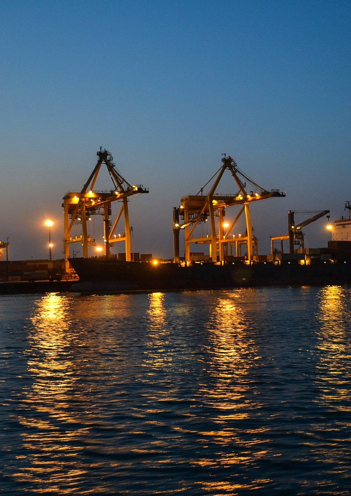
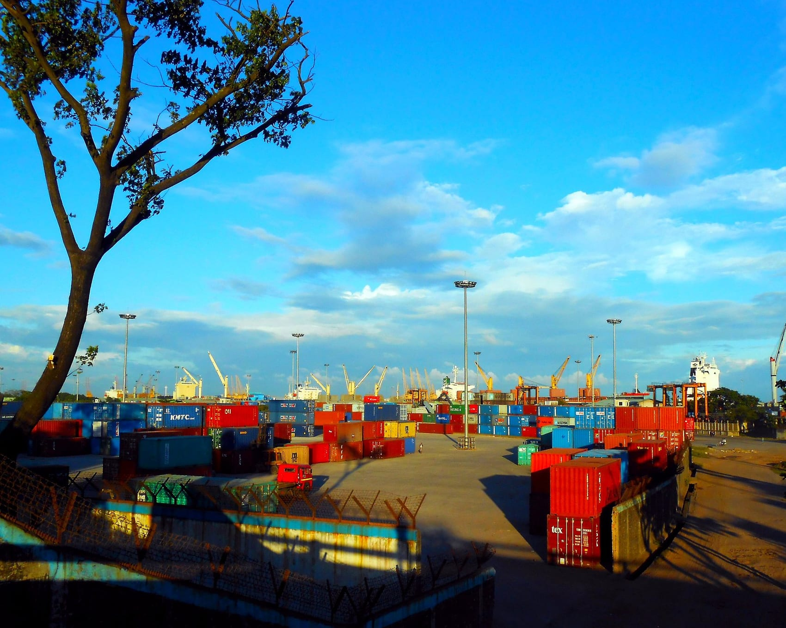
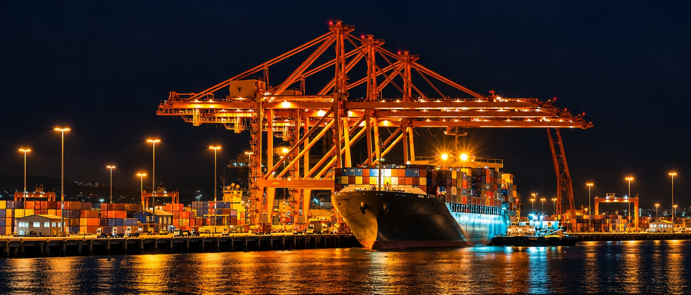
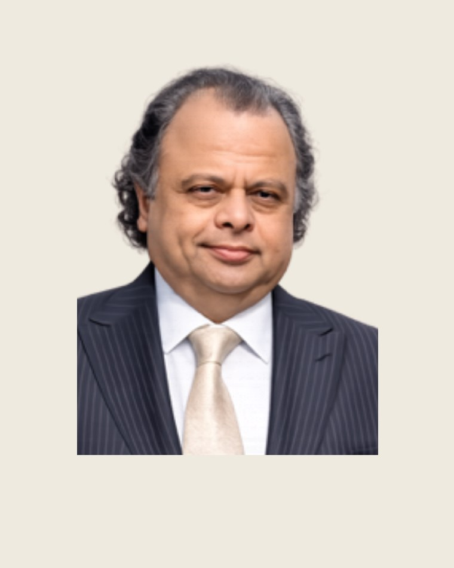
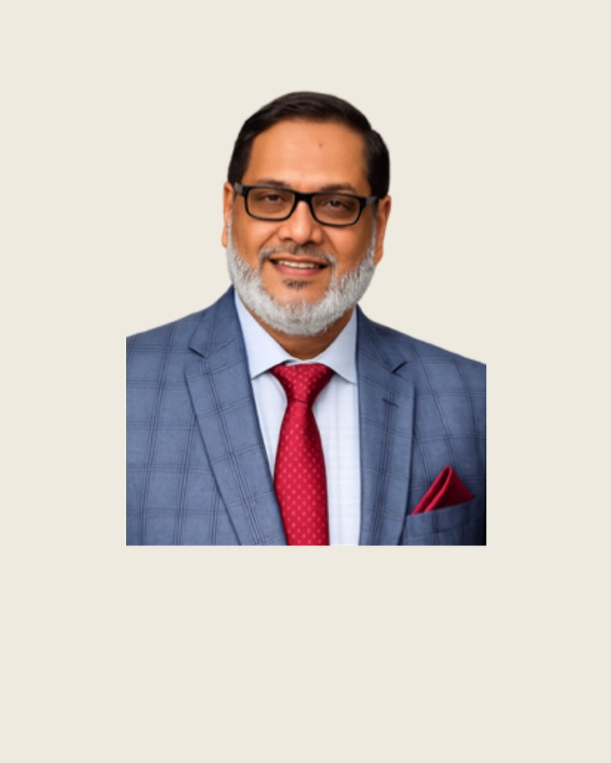
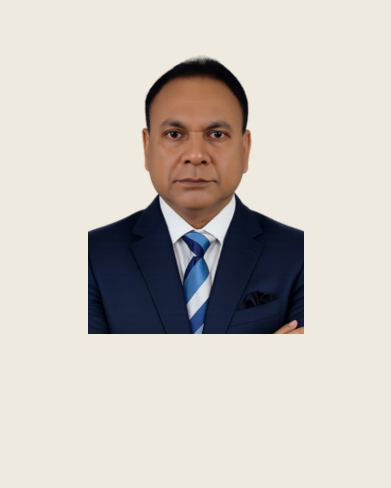
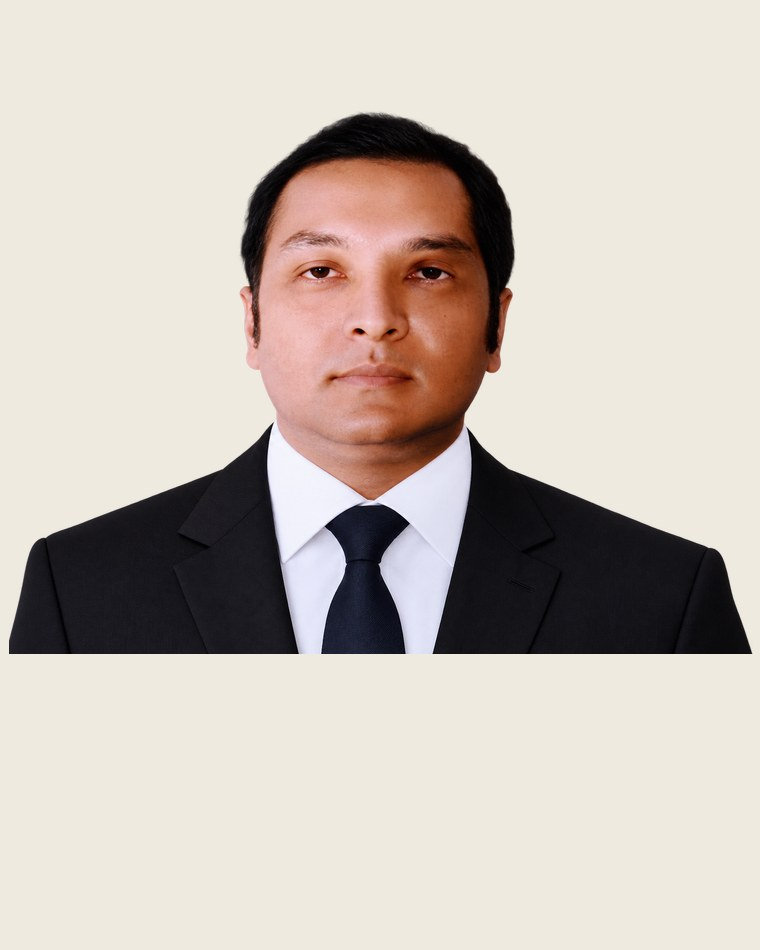
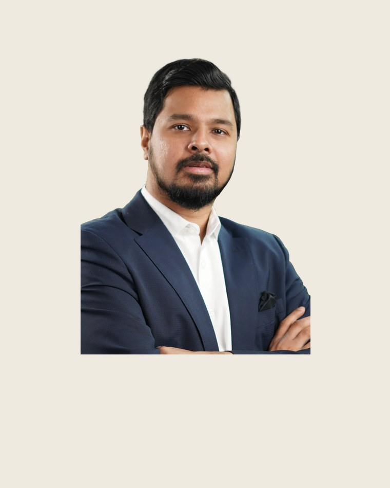
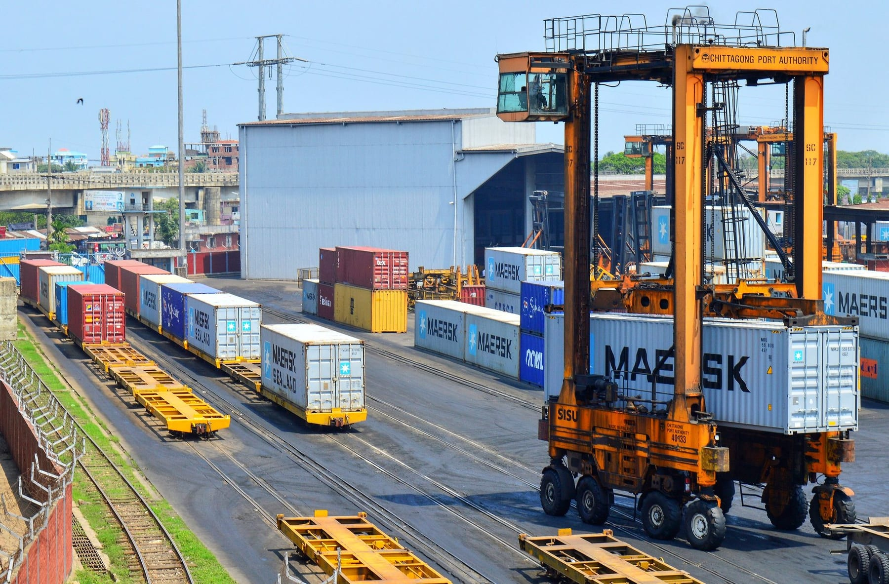

A terminal operating company bringing owned equipment, a trained workforce and in-house marine engineering together under one accountable operator.
NHCT is not a new name in Bangladesh’s port economy. It is the operating company through which several of the country’s most established maritime, engineering, industrial and financial houses have come together to run terminal operations at Chattogram.
Its principals have built shipyards and delivered vessels to a dozen countries, run ocean-going fleets, operated inside Chattogram’s container terminals, and managed workforces in the thousands. NHCT brings that depth into a single operating company, with its own equipment, its own people and in-house maintenance.

NHCT does not start from zero. It is built on established houses that have operated in shipbuilding, shipping, stevedoring, port logistics, engineering and finance for decades.
150+ vessels built, 32 exported. Heavy engineering, fabrication and ISO / class quality.
Deep roots in the Chattogram port ecosystem: stevedoring at scale, government and banking.
Ocean-going fleet, a 15 MW power station and a 5-star hotel: engineering and facilities.
Container movement in direct interface with Chattogram’s terminals: first-hand knowledge.
A top-ranked global accountancy network: financial control and governance.

Five principals, each a leader in a field central to terminal operations, form the core of NHCT. Between them they cover marine and mechanical engineering, shipbuilding, terminal operations, stevedoring, survey and financial control.






NHCT runs the internal operating layer of a container terminal, end to end, under the operator’s management and systems. Ten capabilities, each set out below: what it is, and the strength NHCT brings to it.
From the quay to the gate, NHCT can run the internal operating cycle of a modern container terminal, organised to fit the operator’s own structure and grouped for efficiency and clear accountability.
NHCT mobilises a complete operating capability: its own equipment, its own three-shift workforce, and the systems to run under the operator’s TOS, from day one.
| Equipment / resource | Nos | Role |
| Tractor-trailers | 40 | Container transfers and internal moves |
| Reach stackers (RST) | fleet | Empties and container handling |
| Forklifts (incl. 3T & 5T) | fleet | Unstuffing, cargo handling |
| Sidelifters | fleet | Empty-container handling |
| Spreaders, slings, lashing | sets | Crane and lashing support |
| Handheld terminals (HHT) | ~30 | TOS-linked yard / gate |
| Tally tablets (TOS) | ~18 | Tally at vessel, yard, CFS |
| Maintenance workshop | 1 | Repair, maintenance, renewal |
NHCT operates under the terminal and warehouse-management systems in place, with TOS-compatible handheld terminals and tally devices, and provides the documentation that connects cleanly into the master terminal flow.
NHCT operates to the standards a world-class terminal expects, and commits to measurable service levels from the first shift.
Container movement operated directly across Chattogram’s terminals, led by a master mariner.
A fleet of trailers, reach stackers, forklifts and sidelifters, backed by its own workshop.
A complete three-shift workforce on the order of a thousand, with reserve.
A technical team by equipment class, backed by a shipbuilding and heavy-engineering heritage.
Deep labour, union, security and institutional relationships that keep operations steady.
CPA-led financial control, transparent billing, and statutory and insurance compliance to standard.
| Measure | How it is managed |
| Yard & transport productivity | Moves per hour per unit, against the berth and yard plan. |
| Truck / trailer turnaround | Average turnaround time per cycle; queue control at hook and gate. |
| Equipment availability | Fleet availability percentage, backed by the in-house maintenance team. |
| Workforce reliability | Full manning per shift with reserve; no-disruption ground operations. |
| Safety & compliance | Zero-harm target; SOP and TOS compliance to international standard. |
| Reporting | Shift, daily and monthly reporting into the master terminal flow. |
Owned equipment, trained people and in-house engineering, run locally and accountable under one operator.
Get in touch